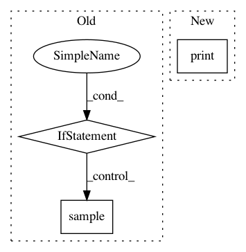

46c988491513e69dd6cfb595e575b6690fb8fef9,src/Documentation/basics.py,,,#,254
Before Change
print(get_structure_stats(spn))
if __name__ == "__main__":
print("create_SPN")
learn_PSPN()
learn_MSPN()
create_SPN()
print("to_string")
to_str()
print("plot")
plot()
print("inference")
inference()
// print("tensorflow")
// tensorflow()
print("valid")
valid()
print("stats")
stats()
print("sample")
sample()
print("classification")
classification()
print("extend")
extend()
print("learn from data")
learn_from_data()
After Change
// extend()
// print("learn from data")
// //learn_from_data()
print("conditional")
condition()
In pattern: SUPERPATTERN
Frequency: 3
Non-data size: 3
Instances
Project Name: SPFlow/SPFlow
Commit Name: 46c988491513e69dd6cfb595e575b6690fb8fef9
Time: 2018-09-13
Author: claas@voelcker.net
File Name: src/Documentation/basics.py
Class Name:
Method Name:
Project Name: commonsense/conceptnet5
Commit Name: d3266d6e0ff7d771bd408631f7849e2e4500bebd
Time: 2017-06-16
Author: joanna.teresa.duda@gmail.com
File Name: conceptnet5/vectors/transforms.py
Class Name:
Method Name: make_replacements_faster
Project Name: pyprob/pyprob
Commit Name: 8820d66965eeb2f5f7bfac58c0fcfc68e748d53a
Time: 2018-12-04
Author: atilimgunes.baydin@gmail.com
File Name: pyprob/nn/inference_network.py
Class Name: InferenceNetwork
Method Name: _init_layers_observe_embedding